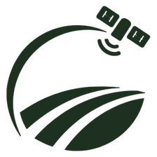

Ir para o conteúdo
Hoje
Ensaiar
Registrar
Chatbot
Voltar ao ensaio
A sua lavoura
Trocar de lavoura
Fechar

Órbita Rural
online · assistente virtual
Conversa dentro do Órbita Rural
Inteligência do espaço. Decisões para a terra.
Hoje
 Inteligência do espaço. Decisões para a terra.
Inteligência do espaço. Decisões para a terra.